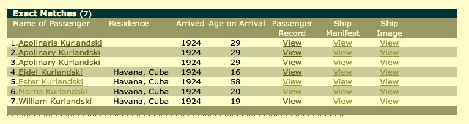

On the Trail of
Sophia & Louis
On this page I recount the process by which I slowly learned more and more about Sophia and Louis. Though lightweight compared to most genealogical research, my experience may be of interest to those who have never tried it themselves.
Where we Begin
Sophia M. Preis was first married to a John Wroblewski, and had two children by him—-John and Regina. Later Regina would come to be known as Sister Regina. After her husband, John, died, Sophia married Louis Roy Kurlandski, my great-grandfather. Together they had five sons.
That’s about all the oral version of the family history tells us. But, presumably, with a little bit of digging we can learn more. Other people have done it--why not us? Let's just put our noses to the ground and get started.
Ellis Island
The Ellis Island records are the most complete set of U.S. immigration records we have. Huge numbers of Europeans passed through there at just about the time my ancestors came to this country. This is the first stop for many a successful quest for information on one's ancestors.
Alas, I've tried searching before through the Ellis Island records, and have never had success. I've even searched while visiting Ellis Island itself, which is now a wonderful museum.
Here's what the Ellis Island website displays when you search on the surname Kurlandski:
Ellis Island records for "Kurlandski"
If you click on the links, you learn that these Kurlandskis weren't Cuban. They were just passing through Cuba on their way from Poland. You can paint yourself a picture of this family, as you click on the links and piece together the information. But, as interesting as all this is, these are no relations of mine. At least not direct relations. The names and the dates are all wrong.
1964
Sister Regina passed on. I don’t have her St. Louis Post Dispatch obituary, but I intend to get it. Go to the following link, type "Regina Wroblewski" into the first field, and hit Go.
Summary of Sister Regina's Obituary
1960
Sophia died and was buried at Resurrection Cemetery in Afton, Missouri, next to Louis.
1944
Louis died and was buried.

Louis and Sophia's gravestone
This gravestone is actually what inspired my quest. My daughter, Sophia Kurlandski, googled herself one day and came across the picture above. Spooky.
As it turns out, this gravestone is just one of many at a website designed to help genealogical research.
1940
The 1940 US Census has Sophia and Louis in a household of three. Notice the middle initials, which we won’t see on the other censuses. Notice also that Sophia is transcribed as Sophie—an error, perhaps, on the part of the Family Search volunteer who transcribed this information from the original hand-written census form.
| Name | Gender | Age | Birthplace |
|---|---|---|---|
| Louis R Kurlandski | M | 64 | Poland |
| Sophie M Kurlandski | F | 61 | Germany |
| Francis S Kurlandski | M | 21 | Missouri |
1930
This census has their household looking like this.
| Name | Gender | Age | Birthplace | Immigration Year |
|---|---|---|---|---|
| Louis Kurlandski | M | 52 | Poland | 1902 |
| Sophia Kurlandski | F | 50 | Germany | (empty) |
| Charles Kurlandski | M | 20 | Missouri | |
| Louis Kurlandski | M | 17 | Missouri | |
| Lenard Kurlandski | M | 15 | Missouri | |
| Lawrence Kurlandski | M | 13 | Missouri | |
| Francis Kurlandski | M | 11 | Missouri |
FamilySearch.org source for Louis, 1930
FamilySearch.org source for Sophia, 1930
1920
Here is their household according to the 1920 US Census. Notice that in this census a child, Catherine, is mentioned. No living relative seems to have any knowledge of her. Did she die prior to the 1930 census? We don’t yet know. Also notice the subtle differences in how the sons’ names were recorded, and the fact that in this census, unlike in 1930, the person who filled out the form provides a date of immigration for Sophia.
| Name | Gender | Age | Birthplace | Immigration Year |
|---|---|---|---|---|
| Louis Kurlandski | M | 44 | Poland | 1902 |
| Sophia Kurlandski | F | 43 | Germany | 1902 |
| Catherine Kurlandski | F | 13 | Missouri | |
| Charles Kurlandski | M | 9 | Missouri | |
| Louis Kurlandski Jr. | M | 7 | Missouri | |
| Leonard Kurlandski | M | 5 | Missouri | |
| Lawrence Kurlandski | M | 3 | Missouri | |
| Frank Kurlandski | M | 1 | Missouri |
FamilySearch.org source for Louis, 1920
FamilySearch.org source for Sophia, 1920
1910
I have no idea how I discovered the record for Sophia and Louis in the 1910 Census. I remember the night: working at my computer, doing searches on Sophia, Louis and John Wroblewski. But I don't remember which search brought me to the following all-important information. I must have been playing around with different spellings of the surname Kurlandski--or I accidentally forgot the "d" in one of my searches.
FamilySearch.org source for Louis, 1910
FamilySearch.org source for Sophia, 1910
I summarize the information on these pages in the table below. Note the change in the spelling of the surname, and the fact that ten years earlier Catherine was known as Katie. Also, notice the two children from Sophia’s previous marriage to John Wroblewski, and that the surname in this record—or its transcription—has been misspelled. We assume that seven-year-old Sophia listed in this census would later take her vows as Sister Regina. (This is the first indication that I have found that her original name was not Regina.)
Another item of interest: this census has Louis's place of birth as Germany, whereas, from 1920 onward it was recorded as Poland. Probably this was because from well before the time he was born until the end of World War I, Poland did not exist as a nation state. People who were ethnically Polish found themselves in the countries of Prussia, Russia or Old Austria.
Finally, notice that Sophia's year of immigration has changed over the three census conducted from 1910-1930. (Apparently this information was not requested after 1930.)
| Name | Gender | Age | Birthplace | Immigration Year |
|---|---|---|---|---|
| Ludwik Kurlanski | M | 34 | Germany | 1900 |
| Sophia Kurlandski | F | 33 | Germany | 1898 |
| Katie Kurlanski | F | 3 | Missouri | |
| Charles Kurlanski | M | 0 | Missouri | |
| John Wroblenski | M | 13 | Missouri | |
| Sophia Wroblenski | F | 7 | Missouri |
At which point I become distracted and lose the scent
From the ages of the children in the 1910 census, we can be pretty sure that Sophia and Ludwik married sometime between 1900 and 1910. Searching for "Sophia Wroblewski" and "Sophia Wroblenski" hasn’t turned anything up yet.
But I did find a John Wroblewski who was two at the time of the 1900 census. That’s about the right age for the boy who was 13 at the time of the 1910 census, above.
FamilySearch.org source for John Wroblewski, 1910
But this John's father and mother were named Frank and Paladia, not John and Sophia. For a while--too long--I let wishful thinking make me imagine that this census information had something to do with my great-grandmother Sophia Wroblewski/Kurlandski. I even looked up the meaning of the name Paladia, and was amazed to learn that, like Sophia, it means "wisdom" in Greek.
Another misstep occurred while I searched immigration records at the Family Search website. I tried out variations on the spelling of both the first name and the surname, and came up with the following record for a Ludwig Kurlansky.
FamilySearch.org source for Ludwig Kurlansky
This Ludwig was 8 when he immigrated in 1884. That puts his birth at 1876 or so--remember that Louis's gravestone, above, has 1875. The fact that this person came from Russia rather than Poland means nothing--Poland did not exist as a nation-state at the time.
I was pretty excited to find this record. Especially when I found other records for other Kurlandskys coming in with him. A whole family. You know, like the mouse family in the movie An American Tail.
But there is one piece of information we have that suggests this is not our boy. The census records are fairly insistent that he immigrated between 1900 and 1902. Of course, they're all over the map when it comes to Sophia's date of immigration, which tells us we shouldn't take the dates for Louis too seriously. But still...
A-woo-woo-woo-woo! The houndog is back on the trail ... and back to Ellis Island
So bravely this houndog soldiered on (a metaphor that wouldn't be mixed if the army were open-minded enough to allow dogs to enlist). I decided to take the 1900-02 date of immigration as a given. I looked for online immigration records for cities other than New York--maybe he'd come in via New Orleans and got to St. Louis by going up the Mississippi. But I couldn't find anything.
Finally I came around full circle: I went back to the Ellis Island site and started searching for "L or Ludwig or Ludwik" "Kurlandski or Kurlandsky or Kurlanski or Kurlansky" immigrating sometime around 1901.
And there he was. To see what I've learned, click on the link for "Ludwig Kurlandsky, Immigrant" in the sidebar.
But what about Sophia?
Still no details. The scent is cold. I'll have to go back to 1910 and try to pick up the trail again.
{kind=link}